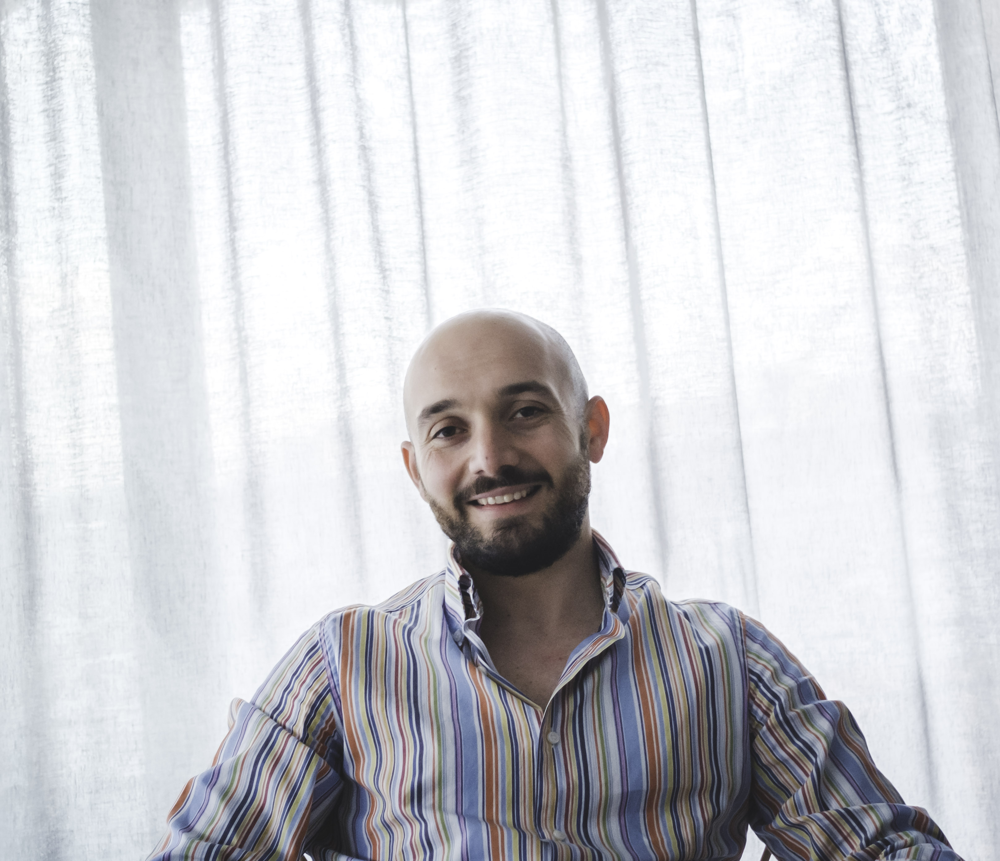

Chi sono
Sono un fotografo siciliano nato e cresciuto alle pendici dell'Etna. Amo fotografare paesaggi, l'Etna, la Sicilia, la street photography e i momenti di vita quotidiana.
Mi sono avvicinato alla fotografia un po' per caso, quando mi regalai una fotocamera reflex per il mio 24° compleanno.
Impiegato presso uno Studio Notarile, sono sposato e papà del piccolo Leonardo. Nel mio tempo libero cerco sempre di ritagliarmi uno spazio da dedicare alla fotografia.
Le due ruote sono un'altra mia grande passione, così come la corsa ed i viaggi.
In questo sito potrete vedere alcuni dei miei scatti. Enjoy and share!